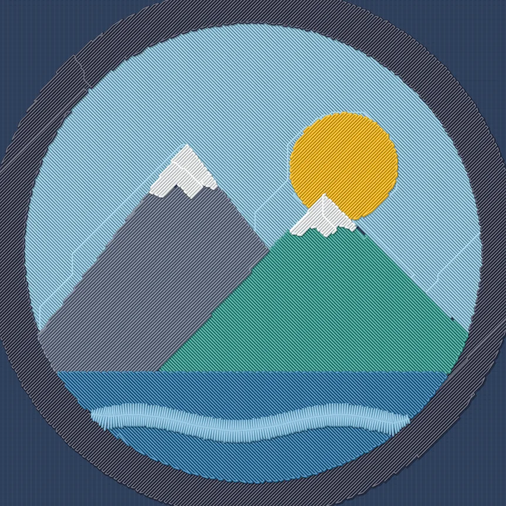
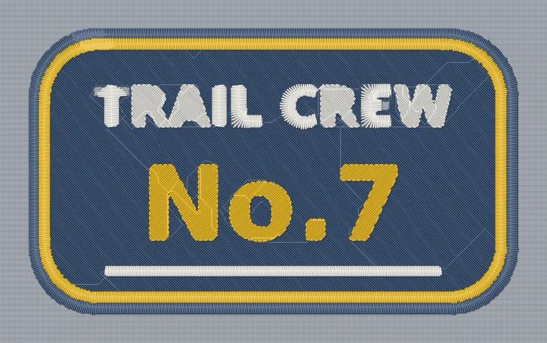
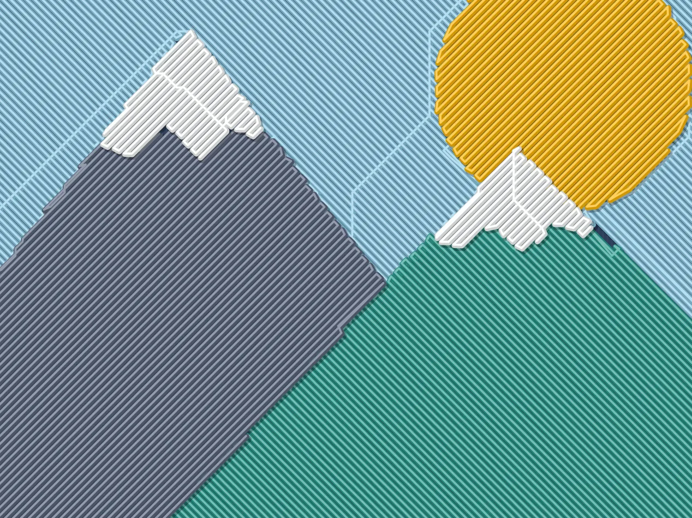

Embroidery digitizing in your browser
Your logo, ready for the hoop.
Drop in your artwork, pick what you're making, and save a DST file your embroidery machine can sew. Satin borders, fill stitches and thread colors are worked out for you.
Runs on your device · Nothing to install · Works on phone and computer

How it works
Three steps from image to stitch file
No digitizing experience needed. Each step shows a live preview of the stitches, so you see what your machine will sew before you save.
-
Add your artwork
Drop in a PNG, JPG or SVG. A plain or transparent background is removed automatically.
PNGJPGSVG -
Choose what you're making
Pick a placement and Hoopline sizes the design, chooses the hoop and finds your thread colors.
Left chestHat frontPatchSleeveFull front -
Check and save
A quality check flags anything that could sew badly. Then save your machine file in one tap.
.DST.EXP.SVG
A real example
Borders in satin, big areas in fill
This patch went through Hoopline with the size set to 110 mm wide. The two border rings and the underline came out as satin, and the background as fill stitch. These are the numbers the app reported.
- Size
- 110 × 64 mm
- Thread colors
- 3
- Stitches
- 10,977
- Sew time
- ~16 min

What it does for you
The fiddly parts of digitizing, handled
-
Satin borders and strokes
Outlines, rings and thin lettering get smooth side-to-side satin with an underlay stitch to hold it flat.
-
Solid fill for large areas
Tatami fill at 0.40 mm row spacing with staggered needle points and pull compensation, so shapes meet without gaps.
-
Clean thread colors
Finds the real colors in your artwork and folds away the in-between shades at edges that would waste a thread change.
-
Fewer thread cuts
The thread travels hidden under stitches still to come instead of cutting, and each shape is finished before moving on.
-
A quality check before you save
Plain-language notes on thread cuts, tiny stitches, color count and hoop fit, with what to change if something needs attention.
-
Watch the sew-out
Play the design stitch by stitch on the fabric color of your choice, and zoom in to check any detail.

Files, hoops and privacy
Made to fit the machine you have
Standard machine files
Every save includes .dst (Tajima), the format most embroidery machines and software can open, plus .exp for Melco, an .svg stitch drawing and a thread list.
Check your machine's manual for the formats it reads.
Common hoop sizes
- 4 × 4 in (100 × 100 mm)
- 5 × 7 in (130 × 180 mm)
- 6 × 10 in (150 × 240 mm)
- 8 × 8 in and 8 × 12 in
Your artwork stays with you
Hoopline does all its work on your phone or computer. Your images are never uploaded.
Install it from your browser and it keeps working without an internet connection.
Questions
Before you start
What artwork works best?
Logos, patches, badges and bold lettering with flat colors. Photos, soft shadows and gradients don't translate well to thread. Lettering sews cleanly when letters are at least about 6 mm tall.
Which embroidery machines can use the files?
DST is the most widely supported embroidery format, and EXP is included for Melco machines. If your machine uses another format such as PES or JEF, many machines still accept DST, and free converters can change it for you.
Can I edit individual stitches?
Not yet. Hoopline digitizes automatically, and the All settings panel lets you adjust density, stitch length, satin width, fill angle and more. For hand-editing single stitches, open the DST in full digitizing software.
Do I need to install anything?
No. It runs in any modern browser. If you'd like an app icon, use "Add to Home Screen" on iPhone or "Install app" in Chrome and Edge.
Should I test-sew first?
Yes, always. Fabric, stabilizer and thread all change how a design sews, so run a new design on scrap fabric before your final piece.
Turn your next logo into stitches
Open Hoopline, drop in your artwork and see the stitch preview in seconds.
Start digitizing →